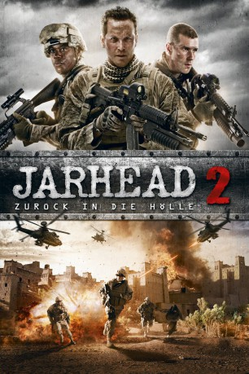

#2691 Jarhead 2 - Zurück in die Hölle
Alternativ: Jarhead 2: Field of Fire
 
 IMDB-Wertung: 5.5 / 10
IMDB-Wertung: 5.5 / 10  Metascore: 0
Metascore: 0 
Corporal Chris Merrimettes Kriegswunden sind nicht nur äußerlicher Natur, sondern auch innerlich. Er übernimmt das Kommando über eine Militäreinheit, deren nächste Mission vorsieht, an der äußersten Grenze des von der Taliban kontrollierten Territoriums einen entfernten Außenposten zu beliefern. Während sie die feindliche Provinz Helmand durchfahren, ersucht ein Elitesoldat ihre Begleitung und beauftragt den Trupp zu einer Operation von internationaler Bedeutung: Eine afghanische Widerstandskämpferin gegen muss unversehrt aus der Gefahrenzone gebracht werden. Merriman und sein Team können dabei nicht auf weitere militärische Unterstützung zählen. Somit müssen einzig und allein der Mut und die endliche Feuerkraft der Soldaten über den Erfolg der Mission entscheiden. Ob das reicht?
Jahr: 2014
Dauer: 102 Minuten
FSK: 16
Land: USA Studio: Universal Studios Home EntertainmentTonspuren: DTS - ,
Untertitel: Deutsch, Englisch,
Auflösung: 1080p (1920x800) Größe: 5713 MB
Genre: Action, Drama, Krieg
Regisseur: Don Michael Paul
Drehbuch: Berkeley Anderson, Ellis Black
Soundtrack: Frederik Wiedmann
Darsteller:
 Cole Hauser als Navy Seal Special Ops Fox
Cole Hauser als Navy Seal Special Ops Fox- Josh Kelly als Chris Merrimette
- Danielle Savre als Danielle 'Danni' Allen
- Bokeem Woodbine als Danny Kettner
- Jesse Garcia als Rafael Soto
- Jason Wong als Li
- Esai Morales als Captain Jones
 Stephen Lang als Major Gavins
Stephen Lang als Major Gavins- Chad Mountain als Soc Cooper
- Ralitsa Paskaleva als Heather
- Ronny Jhutti als Khalid
- Cassie Layton als Anoosh
- Amr El-Bayoumi als Police Captain
- Velislav Pavlov als Nafiz
- Mike Straub als Staff Sergeant Dickson
- Alexander Krustev als Another Marine
- Boyan Levchev als Corpsman
- Daniel Coetzer als One of the Marines
Datei: X:\3-Trilogie(G-M)\Jarhead\Jarhead 2 - Zurück in die Hölle (2014, FSK16, 1920x800).mkv seit 03.12.2015
Festplatte: HD Collection-2(A-Z)-3(A-M)
 Alle Filme aus Gruppe '3-Trilogie(G-M)\Jarhead'
Alle Filme aus Gruppe '3-Trilogie(G-M)\Jarhead'